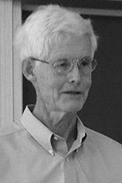

|  |
1982 год Stephen A. Cook (1939) «За существенный вклад в понимании сложности вычислений. Его работа "The Complexity of Theorem Proving Procedures" положила основу теории NP-полноты. Исследование свойств и границ этого класса стало одним из важнейших направлений теории вычислительных систем за последние десять лет» |
Страна: США
Образование: Доктор философии в области математики, Гарвардский университет, 1966
О лауреате
В 1971 году Stephen Cook на третьем ежегодном симпозиуме по теории вычислений представил свою статью “The complexity of theorem proving procedures”. Эта статья ознаменовала введение NP-полноты, которая с тех пор занимала центральное место в теоретической информатике. Это был также ранний вклад в теорию сложности доказательства пропозиций, область, в которой Кук продолжал проводить обширные исследования в течение следующих 40 лет. Так же в своей работе он поднял вопрос о равенстве классов сложности P и NP, один из сложнейших вопросов теории вычислительных систем, на который до сих пор нет ответа. Cook также внес важный вклад в области математической логики, связанный с вычислительной сложностью. В статье “The relative efficiency of propositional proof systems” он заложил основы сложности пропозициональных доказательств.
Ключевые слова: NP-completeness, Propositional proof complexity
Краткая библиография
| 1. |
Cook, Stephen A., “The complexity of theorem-proving procedures,” Proceedings of the 3rd Annual ACM Symposium on Theory of Computing (STOC '71), ACM, New York, NY, USA, 1971, pp. 151-158. Эта статья вводит понятие NP-полноты и представляет собой каноническую NP-полную задачу, задачу выполнимости для булевых формул. Он также демонстрирует, как метод ограниченных ресурсами сокращений может использоваться, чтобы показать, что проблемы NP-полны. |
| 2. |
Cook, Stephen A. and Robert A. Reckhow, “The relative efficiency of propositional proof systems,” The Journal of Symbolic Logic, Volume 44, Number 1, 1979, pp. 36-50. В этой статье предлагается длина доказательства как мера сложности систем пропозициональных доказательств и доказывается, что существование эффективной системы доказательств для пропозициональных тавтологий эквивалентно замыканию класса NP при дополнении. |
| 3. |
Cook, Stephen A., “Feasibly constructive proofs and the propositional calculus (Preliminary Version),” Proceedings of 7th Annual ACM Symposium on Theory of Computing (STOC '75), ACM, New York, NY, USA, 83-97. Здесь вводится система PV для эквациональных рассуждений о многопользовательских концепциях. Показано, что утверждения, доказуемые в PV, имеют пропозициональные сдвиги с короткими доказательствами. |